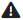

| 1 | Select the checkboxes in combination with the action symbols to Delete (  ) the selected tag(s) or Move ( ) the selected tag(s) or Move ( ) them within the folder structure. ) them within the folder structure. |
| 2 | Click  to Add a new tag or click to Add a new tag or click  to Edit tags. Click to Edit tags. Click  to export to Excel or to import from Excel. to export to Excel or to import from Excel. |
| 3 | Use the Search function to browse through the displayed entries by typing any term into the search field. You can use the drop-down menu to filter per specific criteria and Collapse and Expand all entries. You can also define which tags should be displayed (all, used, unused). |
| 4 | Next to the you can see the number of tags allocated to KPIs, organizational models and stakeholders. Click on the symbol to view more details. |
| 5 | If you see the yellow warning symbol  , it means that the tag is not allocated to anything.
You can allocate tags to different entries in the different modules.
|